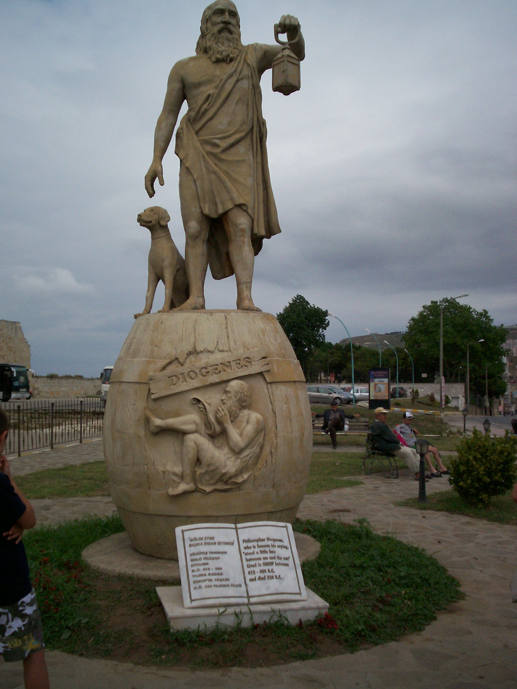
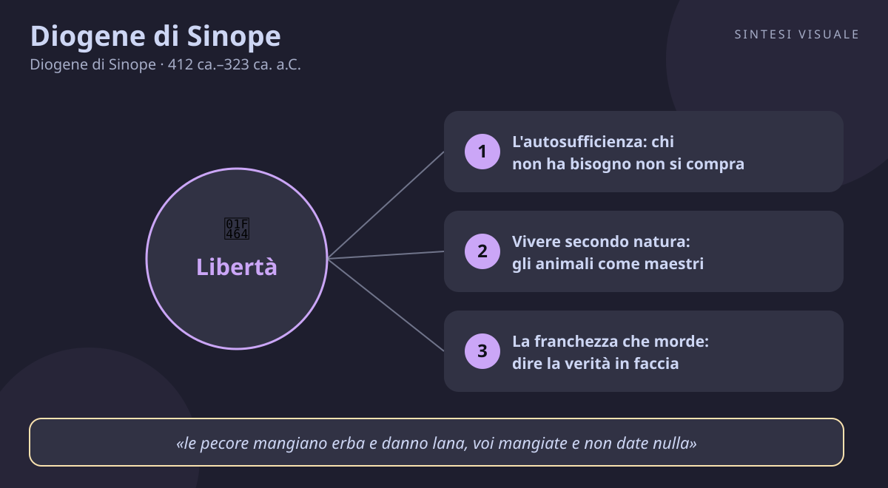

Home / Filosofi / Diogene di Sinope

Diogene di Sinope
Diogene di Sinope · 412 ca.–323 ca. a.C.
«Togliti dal mio sole»
- Autarchia
- Natura
- Franchezza
- Cosmopolitismo
💬La massima
«Togliti dal mio sole.»
— Detto rivolto ad Alessandro Magno, secondo Diogene Laerzio, Vite dei filosofi, VI, 38 (in greco: «ἀποσκότησόν μου», letteralmente «fammi ombra da un'altra parte / toglimi la tua ombra di dosso»)
Il racconto va preso per quello che è: tradizione dossografica scritta circa sei secoli dopo i fatti, non cronaca. Ma la scena è perfetta per capire Diogene. Alessandro — il ragazzo che a vent'anni comandava già la Grecia — va a trovare il filosofo più famoso del suo tempo, disteso al sole nel Craneo, il ginnasio di Corinto. Gli offre qualunque favore. E Diogene, senza alzarsi, gli chiede una sola cosa: spostati, mi stai coprendo il sole.
Il senso è radicale: il re può dare onori, denaro, potere — tutto ciò di cui Diogene ha deciso di fare a meno. L'unico bene che conta, il calore del sole, è gratis e appartiene a tutti; e proprio quello Alessandro glielo sta togliendo con la sua ombra. La massima rovescia i rapporti di forza: il potente è improvvisamente piccolo, e il nullatenente è l'unico davvero libero, perché non ha nulla da chiedere. Vale anche per noi: quante volte cediamo tempo, sonno e serenità a chi ci promette favori, promozioni, visibilità — e poi scopriamo che ci ha solo tolto il sole? La libertà, per Diogene, comincia dal saper dire «spostati» a ciò che oscura l'essenziale.
👤Biografia
Diogene nasce a Sinope, colonia greca sul Mar Nero (oggi Sinop, in Turchia), attorno al 412 a.C., figlio di Icesia, cambiavalute della città. La leggenda — dai contorni incerti ma confermata da ritrovamenti numismatici di monete ribattute — racconta che padre e figlio furono coinvolti in uno scandalo di moneta alterata: Diogene va in esilio, e l'oracolo di Delfi gli avrebbe risposto, alla richiesta di consiglio, «falsifica la moneta» — cioè: rovescia i valori correnti. Ed è esattamente quello che fa per il resto della vita.
Giunto ad Atene, si lega ad Antistene, il discepolo di Socrate che predicava una vita semplice e virtuosa; la tradizione dice che Antistene all'inizio lo scacciò col bastone, e Diogene offrì la testa: «colpisci, non troverai un legno abbastanza duro da tenermi lontano da te». Da lì in poi vive da vagabondo: dorme in un grande pithos, la giara di terracotta per le derrate (la «botte» della leggenda), possiede solo mantello, bisaccia e ciotola — e getta via anche la ciotola quando vede un bambino bere con le mani: «un fanciullo mi ha superato in semplicità». Muore a Corinto attorno al 323 a.C., la tradizione dice lo stesso anno di Alessandro: il re del mondo e il cane filosofo escono di scena insieme. Burbero, spiritoso, instancabile: un uomo che fece della propria vita l'argomentazione.
📌Sintesi del pensiero
Il cinismo di Diogene sta in una formula: vivere secondo natura, senza bisogni artificiali. La felicità non dipende da ricchezze, patria, reputazione o potere, ma dall'autosufficienza (autarchia): chi sa bastare a se stesso non può essere ricattato da nessuno. Per arrivarci servono esercizio quotidiano, franchezza brutale nel dire la verità (parrhesia) e sfrontatezza nel violare le convenzioni (anaideia): mangiare in piazza, chiedere l'elemosina ai ricchi, rispondere per le rime ai potenti. Non scrisse quasi nulla — la sua filosofia era la sua vita, fatta di gesti e battute che smascheravano l'ipocrisia. Da questa scuola rude nascerà, una generazione dopo, lo stoicismo.
🏛️I temi fondamentali
- L'autosufficienza: chi non ha bisogno non si compra. Il cuore del cinismo è l'autarchia: ridurre i bisogni fino al punto in cui nessuno può controllarti. Diogene possedeva un mantello che era cappotto di giorno e coperta di notte, una bisaccia per il cibo, niente casa: «gli dèi non hanno bisogno di nulla, e chi assomiglia di più agli dèi ha bisogno di pochissimo». Esempio concreto: il professionista che vive con poco e mette da parte il resto può dire di no a un cliente maleducato o a un capo che chiede l'impossibile; chi è strozzato dalle rate, no. La libertà è anche un foglio di calcolo.
- Vivere secondo natura: gli animali come maestri. Diogene osservava cani, topi, bambini: mangiano quando hanno fame, dormono quando hanno sonno, non si vergognano del corpo, non accumulano. La civiltà, diceva, ci ha insegnato bisogni finti — profumi, banchetti, onori — che ci rendono schiavi. Non proponeva di tornare alle caverne, ma di usare la natura come cartina di tornasole: è davvero necessario, o è solo convenzione? Esempio concreto: prima di comprare l'ennesimo oggetto «indispensabile», chiedersi se un bambino o un animale ne sentirebbe la mancanza; se la risposta è no, forse a mancare è solo l'abitudine.
- La franchezza che morde: dire la verità in faccia. La parrhesia — parlare chiaro senza paura — era per Diogene un dovere: chiamava i retori «tre volte infelici» perché insegnavano a parlare bene invece che a vivere bene, e ai potenti diceva in faccia quello che i cortigiani sussurravano alle spalle. L'aneddoto del sole ad Alessandro è l'esempio supremo, ma la sua intera vita fu così: un cane (kyon, da cui «cinico») che abbaia ai vizi e scodinzola solo alla virtù. Esempio concreto: in una riunione dove tutti annuiscono a un piano insensato, la persona che dice «scusate, questo non funzionerà, e vi spiego perché» fa il lavoro di Diogene — sgradevole per un minuto, preziosa per mesi.
- Cittadino del mondo: la patria è una convenzione. Alla domanda di dove fosse originario, Diogene rispondeva: «Sono cittadino del mondo» (kosmopolites, Diogene Laerzio VI, 63) — la prima dichiarazione di cosmopolitismo della storia occidentale. Patria, leggi, costumi: utili accordi, non verità eterne; il saggio deve obbedienza solo alla ragione e alla natura. Esempio concreto: chi lavora con colleghi di tre continenti in videochiamata pratica ogni giorno questo cosmopolitismo — le buone idee non hanno passaporto, e giudicare una persona dall'accento invece che dal ragionamento è la più stupida delle convenzioni.
- Il gesto come filosofia: la lanterna in pieno giorno. Diogene girava per Atene con una lanterna accesa in pieno giorno dicendo: «Cerco l'uomo» (Diogene Laerzio VI, 41) — cioè un essere umano autentico, onesto, coerente. Non argomentava con trattati: metteva in scena la verità con il corpo, come un attore di strada. Gettare la ciotola, abbracciare le statue infreddolite per allenarsi al disagio, chiedere l'elemosina a una statua «per abituarsi ai rifiuti»: ogni gesto era una lezione. Esempio concreto: il capo che arriva in bicicletta sotto la pioggia, il genitore che spegne davvero il telefono a cena, l'amico che chiede scusa per primo — predicano senza parole, e si ricordano più di mille discorsi.
📚Le opere principali
- La Repubblica (Politeia). Opera attribuita a Diogene e oggi perduta, nota solo dalle citazioni di Diogene Laerzio e Filodemo. Tesi centrale: una città ideale senza famiglia tradizionale, senza proprietà e senza convenzioni borghesi, fondata solo su natura e virtù — idee così scandalose che alcuni stoici posteriori le dichiararono false per imbarazzo. Conta perché è il manifesto politico del cinismo e l'antenata di ogni utopia anarchica ed egualitaria.
- Le Tragedie e i detti (chreiai). Sette tragedie e raccolte di battute e aneddoti attribuiti a Diogene, anch'essi perduti o di paternità dubbia. Tesi centrale implicita: la filosofia si trasmette con la battuta fulminante, non con il sistema. Contano perché è attraverso questi frammenti — il sole, la lanterna, la ciotola — che Diogene ha davvero «pubblicato»: la sua opera è la sua leggenda.
- Le Lettere ciniche (pseudoepigrafe). Una raccolta di lettere attribuite a Diogene e ai suoi seguaci, composte in realtà secoli dopo (I secolo a.C.–I secolo d.C.) da autori anonimi. Tesi centrale: applicare il cinismo a ogni situazione quotidiana — al ricco, al politico, al giovane ambizioso. Contano perché mostrano quanto Diogene fosse diventato un personaggio-modello: per cinquecento anni, firmarsi «Diogene» significò firmare la libertà di parola.
💬Massime celebri
«Cerco l'uomo» — aneddoto riportato da Diogene Laerzio, Vite dei filosofi, VI, 41 (il filosofo con la lanterna accesa in pieno giorno). Conta perché è il manifesto della sua ricerca: in mezzo alla folla non si trova quasi mai un essere umano autentico — e la lanterna accesa di giorno dice che per trovarlo bisogna guardare meglio, non avere più luce.
«Sono cittadino del mondo» — risposta alla domanda sulla sua origine, in Diogene Laerzio, VI, 63. Conta perché inventa il cosmopolitismo: la prima volta che un uomo dichiara di non appartenere a una città ma all'umanità intera — un'idea che arriva fino alle dichiarazioni dei diritti umani.
«Avvolgiti nella tua virtù» (detto ai potenti e ai ricchi in varie forme; celebre il rimprovero a chi si vantava delle ricchezze: «le pecore mangiano erba e danno lana, voi mangiate e non date nulla»). Conta perché riassume l'economia cinica: il valore di una persona sta in ciò che dà, non in ciò che accumula.
⌛Contesto storico
Diogene nasce attorno al 412 a.C. a Sinope, avamposto greco sul Mar Nero: il mondo greco è allora lacerato dalla guerra del Peloponneso tra Atene e Sparta (431–404), che si chiude con la sconfitta di Atene proprio mentre Diogene è bambino. Cresce in una Grecia di città-stato orgogliose e litigiose, dove la democrazia ateniese ha appena condannato a morte Socrate (399 a.C.) — il processo che segna la sua generazione filosofica: Antistene, ex discepolo di Socrate, fonda la scuola cinica proprio reagendo a quella ferita.
La sua età adulta è il tramonto della Grecia libera: Filippo II di Macedonia schiaccia le città greche a Cheronea (338 a.C.), e il figlio Alessandro, tra il 336 e il 323, costruisce in dodici anni un impero dalla Grecia all'India — è l'uomo del «sole» dell'aneddoto. Diogene vive tra Atene, cuore culturale in declino politico, e Corinto, ricca città di commerci dove predica e muore. Attorno a lui nascono le grandi scuole ellenistiche: l'Accademia di Platone, il Liceo di Aristotele (precettore di Alessandro!), gli scettici, e presto gli stoici.
I movimenti che lo formano sono il socratismo di Antistene — la virtù basta alla felicità — e la crisi dei valori della polis, che spinge molti a cercare la salvezza nel singolo, non più nella città. I movimenti che lui genera sono il cinismo di Cratete di Tebe e Ipparchia, la prima filosofa cinica, e soprattutto lo stoicismo: Zenone di Cizio, naufrago diventato filosofo, impara dai cinici l'autosufficienza e la legge di natura, e la trasforma nel sistema che conquisterà Roma e gli imperatori.
🌊L'eredità
Da Diogene discende una lunga stirpe di spiriti liberi. Il primo erede è Cratete di Tebe, ricco cittadino che distribuì i suoi beni e seguì Diogene con la moglie Ipparchia — la coppia cinica che scandalizzò la Grecia vivendo in strada per scelta. Da Cratete impara Zenone di Cizio, fondatore dello stoicismo: senza Diogene non esisterebbero né Epitteto né Marco Aurelio, che pure abbiamo già incontrato in queste pagine. I romani lo adorarono e lo temetterono: Cicerone lo cita, Giovenale lo invidia, i primi cristiani — con il loro elogio della povertà — ne respirano l'aria senza ammetterlo. Nel Cinquecento Rabelais ne fa il modello di Gargantua, Diderot lo celebra nell'Illuminismo come patrono degli spiriti forti, e Nietzsche — che pure lo pungolava — riconosce in lui il primo «spirito libero». Fino a oggi: ogni volta che un vignettista disegna un barbone saggio, ogni volta che un film oppone il miliardario infelice al senzatetto sereno, ogni volta che qualcuno dice «la libertà non si compra», è Diogene che parla. Raffaello lo ha dipinto sdraiato sulle scale della Scuola di Atene, indifferente a Platone e Aristotele sopra di lui: il filosofo che sta scomodo anche in un capolavoro.
🌍Esempi di oggi
- Il collega che dice no alla promozione avvelenata. Gli offrono più soldi, più titolo, più reperibilità notturna — e lui rifiuta perché ha calcolato che il «sole» della sua vita sono le sere con i figli e le corse all'alba. I colleghi lo prendono per matto, come i cortigiani di Alessandro risero di Diogene; un anno dopo, è l'unico a non essere esausto. La libertà è saper rifiutare il favore sbagliato.
- La lanterna accesa sui social. Una ragazza scorre decine di profili perfetti — colazioni perfette, coppie perfette, carriere perfette — e invece di deprimersi accende la sua lanterna: cerca, dietro i filtri, una persona vera. Scrive a un'amica «come stai davvero?» e scopre che anche la vita «perfetta» piange la sera. Cercare l'uomo, oggi, significa cercare l'autentico sotto la vetrina.
- La ciotola buttata via in cucina. Un uomo decide di svuotare l'armadio delle cianfrusaglie, disdire tre abbonamenti che non usa, vendere la seconda auto che serve solo a pagare l'assicurazione della seconda auto. Ogni oggetto in meno è un «togliti dal mio sole» detto alle bollette, alle pulizie, alle ansie. Dopo un mese scopre la lezione della ciotola del bambino: bastavano le mani — bastava molto meno.
📄
# Diogene di Sinope — «Togliti dal mio sole»
Buongiorno! Oggi incontriamo il filosofo più irriverente dell'antichità: l'uomo che viveva in una giara, pranzava in piazza, rispondeva ai re come a dei passanti e andava in giro con una lanterna accesa in pieno giorno. Il ritratto qui sopra — la statua moderna di Diogene a Sinope, la sua città natale sul Mar Nero — lo mostra con la lanterna in mano e il cane accanto, i suoi due simboli: la ricerca dell'uomo vero e la fedeltà alla natura senza maschere.
🧠Quiz
Metti alla prova quello che hai letto — rispondi in chat con es. 1B 2A 3C 4D 5A (usa «-» per le risposte che salti):
1 Da quale fonte viene la massima «Togliti dal mio sole»?
2 Che cosa significa, nel pensiero di Diogene, l'autosufficienza (autarchia)?
3 Perché Diogene girava con una lanterna accesa in pieno giorno dicendo «Cerco l'uomo»?
4 Che cosa rispondeva Diogene a chi gli chiedeva di quale città fosse?
5 Quale scuola filosofica nasce, una generazione dopo, anche grazie all'esempio di Diogene e del suo discepolo Cratete?
✅Soluzioni — tocca per vedere
1B – 2B – 3B – 4C – 5A
🔁Ripasso
- Massima e fonte (domanda 1): se hai sbagliato la 1, ricorda che quasi tutto ciò che sappiamo di Diogene viene da Diogene Laerzio (III secolo d.C.), non da suoi scritti: l'aneddoto del sole è tradizione dossografica, preziosa come lezione anche se non è cronaca.
- Autarchia (domanda 2): se hai sbagliato la 2, ricorda la formula «gli dèi non hanno bisogno di nulla»: meno bisogni artificiali, più libertà reale — la libertà si misura da ciò che puoi rifiutare.
- Lanterna e cosmopolitismo (domande 3-4): se hai sbagliato la 3 o la 4, ricorda i due simboli: la lanterna cerca l'autentico tra le maschere, e il «cittadino del mondo» dichiara che patria e costumi sono convenzioni, non verità eterne.
🖼️In un colpo d’occhio

Tocca l’immagine per ingrandirla.